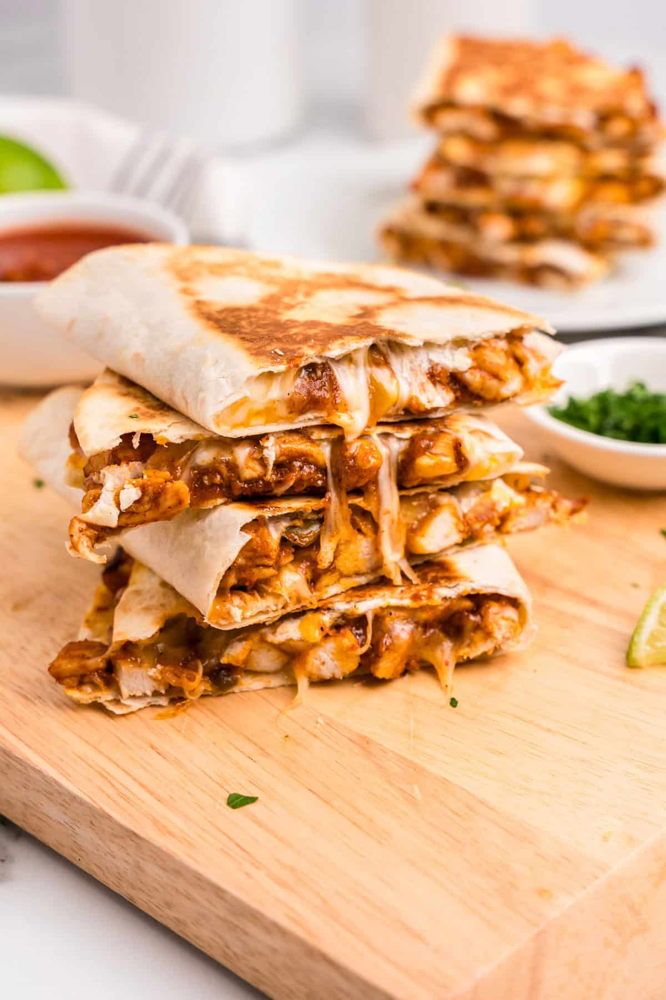

main meal
Quesadillas
Crispy Quesadillas with Cheesy Mexican Filling
Crispy golden tortillas filled with melted cheese, seasoned beef, chicken or vegetables and fresh Mexican flavours.
What You'll Need
Ingredients
Quesadillas
- 6-8 flour tortillas
- 200g grated cheese
- ¾ cup coriander, roughly chopped
- 1 cup corn kernels
- 1 filling of your choice
Mexican Spice Mix
- 1 tsp onion powder
- 1 tsp dried organo
- 1 tsp salt
- 2 tsp cumin powder
- 2 tsp paprika
- ¼ tsp black pepper
- ¼ tsp cayenne pepper, optional
Beef Filling
- ½ Tbsp olive oil
- 2 garlic cloves, minced
- onion, finely chopped
- 500g beef mince
- 1 small red capsicum, diced
- 2 Tbsp tomato paste
- ¼ cup water
Chicken Filling
- 2½ Tbsp olive oil
- 500g boneless, skinless chicken thighs
- 2 garlic cloves, minced
- 1 small onion, sliced
- 1 small red capsicum, diced
Vegetable Filling
- 2 Tbsp vegetable oil
- 1 onion, diced
- 2 garlic cloves, minced
- 1 can black beans, drained
- 1 capsicum, diced
- 1 cup corn
- ¼ cup tomato paste
- ¼ cup water
Time To Cook
Method
Make the Spice Mix
Add all of the spice mix ingredients to a small bowl. Stir until evenly combined.
Set the spice mix aside while preparing your chosen filling.
Beef Filling
Heat the olive oil in a large pan over high heat. Add the onion and garlic and cook for about 2 minutes.
Add the beef mince and cook while breaking it apart with a wooden spoon until browned.
Add the diced capsicum and cook for another minute.
Stir in the tomato paste, water and spice mix. Cook for another 2 minutes until the filling is cooked through and the liquid has reduced.
Transfer the filling to a bowl and allow it to cool before assembling the quesadillas.
Chicken Filling
Coat the chicken thighs with 1 tablespoon of oil and season evenly with the spice mix.
Heat 1 tablespoon of oil in a large pan. Cook the onion and garlic for about 2 minutes, then add the capsicum and cook for another minute. Remove the vegetables from the pan.
Add the remaining oil to the pan and cook the chicken for about 3 minutes on each side, or until cooked through and golden.
Rest the chicken for 2 minutes, then cut it into small pieces and mix with the cooked vegetables.
Vegetable Filling
Heat the vegetable oil in a pan over high heat. Add the onion and garlic and cook for 2 minutes.
Add the capsicum and cook for another minute.
Stir in the black beans, corn, tomato paste, water and spice mix.
Cook for about 2 minutes, then remove from the heat and allow the filling to cool.
Assemble the Quesadillas
Place a tortilla on a clean work surface. Sprinkle cheese over one half.
Add your chosen filling, followed by corn and chopped corainder.
Add another layer of cheese over the filling, then fold the tortilla in half.
Heat a non-stick pan over medium-low heat. Place the quesadilla in the dry pan and press it down gently.
Cover the pan and cook for about 3 minutes, until the underside is golden and crispy.
Carefully flip the quesadilla and cook uncovered for another 2-3 minutes until crisp and the cheese has melted.
Transfer to a chopping board, cut in half and serve immediately with sour cream, salsa or your favourite dipping sauce.
Source & Credits
Recipe & Image Credits
Recipe Source
RecipeTin Eats
This Quesadillas recipe was originally publish by RecipeTin Eats.
View Original RecipeImage Source
Julie's Eats & Treats
The image on this page is sourced from Julie's Eats & Treats.
View Image SourceRecipe creators and image sources are credited to acknowledge the original creators of the content used on this page.